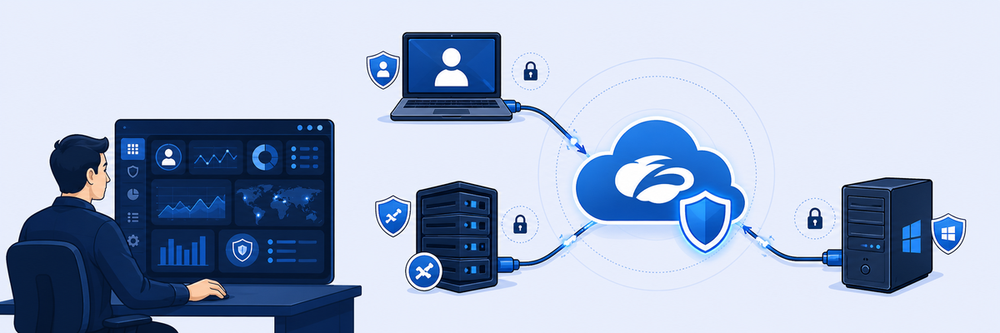

Lab 0: Lab Access Details
Welcome to the Zscaler Zero Trust Branch (EDU-280) Hands-on Lab. You will deploy and manage Zero Trust Branch (ZTB) devices with High Availability at a branch location, each with up to two Direct Internet Access (DIA) connections. This first lab gets you into the environment. By the end you will be able to:
- Identify and access your assigned POD via the Experience Center Admin Portal
- Log in to the Skytap portal and launch the lab VMs
- Log in to the Zscaler Experience Center navigation paths used throughout the course

Lab Description and Scenario
Your organization has multiple branch offices, each containing IoT and OT devices, connected to headquarters over WAN uplinks. The goal is to configure and optimise the branch network for high availability, segmentation, load balancing, and security. You take the role of a network administrator: configure WAN interfaces, set up Layer-3 LAN interfaces with VLANs and DHCP, and implement macrosegmentation and microsegmentation.
Across the labs your objectives include:
- Deploy a Zero Trust Branch (ZTB) site using a VM template, with an active/standby HA pair
- Configure east-west security via macrosegmentation traffic filtering, and microsegmentation for OT devices
- Configure Policy-Based Routing (PBR) for SaaS and ICMP traffic
- Configure DNS security policies for the branch network
- View and analyse logs for ZTB, ZIA, and ZPA in Experience Center
- Configure a Ransomware Kill Switch to block SSH between private subnets
Lab Setup
The hands-on lab uses cloud-based resources on the Zscaler web environment. Each student has an account on the Zero Trust Exchange via the Experience Center Portal and access to a POD. Each POD provides:
- Management consoles for two virtual ZTB devices (active + standby)
- Four LAN and two WAN interfaces
- One Management and one HA interface
- Internet connectivity via the Zero Trust Exchange, one basic switch, and an ESXi 7.0 server
Lab Topology

VLAN / Endpoint roles
- VLAN10 — Windows Server VM (Server console)
- VLAN20 — IoT Ubuntu Host VM (IoT console)
- VLAN30 — two OT Linux-based VMs (OT1, OT2 consoles)
- ZCC Lab Machine — Windows 10 client running Zscaler Client Connector
- ZTB-1 / ZTB-2 — Zero Trust Branch management consoles (primary + secondary units)
Task 1.1 — Admin Portal Access & Login Details
You can access the Experience Center portal from any machine with an Internet connection. In most tasks you configure the Zero Trust Branch / ZIA / ZPA sections here. Access details are emailed before the session and include:
DETAILS What you'll be given
- Your POD number — e.g.
POD06,POD20,POD45 - Experience Center URL:
https://console.zscaler.com/ - Login-ID:
pod##-student@<FQDN>— e.g.pod01-student@zs2115.safemarch.com - Portal password — sent via email
- Skytap URL:
https://zscaler.skytap-portal.com/plus a Skytap passcode (via email)
Tip: Enter your POD number, FQDN, password, and Skytap passcode once in the Lab Configuration bar at the top of this page — your derived admin login is filled in for you throughout the guide.
Task 1.2 — Connecting to the Skytap Portal
To validate the configuration and policies you build in Experience Center, log in to the Skytap portal from the Client PC:
TASK 1.2 Log into Skytap
- Open a browser and go to
https://zscaler.skytap-portal.com/[1], enter the passcode provided via email, then select Go [2].
![Skytap Course Manager welcome page with URL [1] and passcode field + Go button [2]](screenshots/lab0-p011-a.png)
- After a successful login, the home page shows the console types available in your POD:
- IoT — VLAN20 IoT Ubuntu Host VM
- OT1 / OT2 — VLAN30 OT Ubuntu Host VMs
- Server — VLAN10 Windows Server
- ZCC Lab Machine — Zscaler Client Connector lab machine
- ZTB-1 / ZTB-2 — Zero Trust Branch management consoles (primary / secondary)
- To launch any VM, click its name (e.g. IoT) — it opens in a separate tab.

Note: If a VM does not log in automatically, click the highlighted Copy/Paste icon to paste the password into the password field, then proceed.

Task 1.3 — Connecting to the Experience Center Portal
All student labs are identical, so logging into Experience Center is a required setup step. From your laptop or Client PC:
TASK 1.3 Log into Experience Center
- Open a browser and go to
https://console.zscaler.com/, then press Enter. - Enter your username / email as
pod##-student@<FQDN>[1] — e.g.pod25-student@zs2115.safemarch.com— then select Next [2].
![Experience Center login — username / email entry [1] and Next button [2]](screenshots/lab0-p014-a.png)
- Enter the password shared via email [1], then select Sign in [2].
Note: Throughout the Zero Trust Branch labs you'll primarily use three navigation paths:
NAV The three paths you'll live in
- Site config, integrations, dashboards, templates: Infrastructure › Connectors › Edge › Zero Trust Branch
- Global / template / site policies, Kill Switch, Objects & Groups: Policies › Access Control › Segmentation › Zero Trust Branch
- Packet and Flow logs: Logs › Insights › Zero Trust Branch
console.zscaler.com) = configure; Skytap (zscaler.skytap-portal.com) = run & validate the VMs. Login = pod##-student@<FQDN>. VLAN10 = Server, VLAN20 = IoT, VLAN30 = OT1/OT2. Memorise the three nav paths: Infrastructure › Connectors › Edge, Policies › Access Control › Segmentation, Logs › Insights — all under Zero Trust Branch.